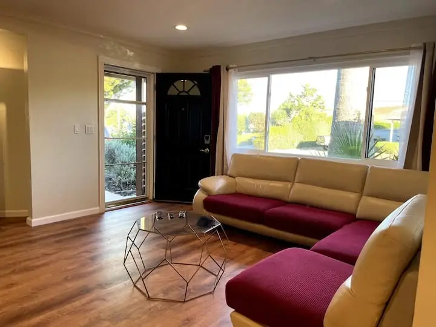
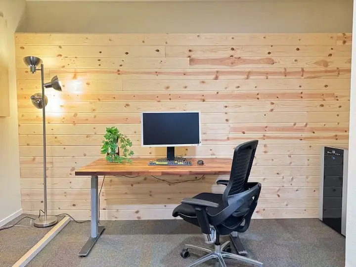
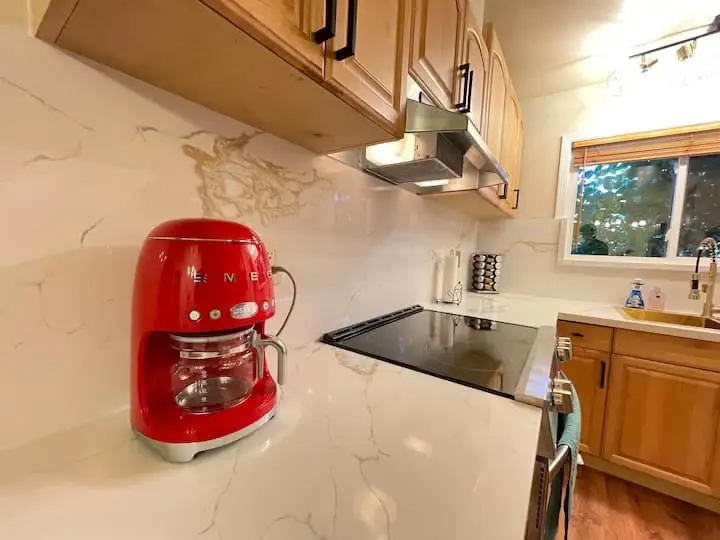
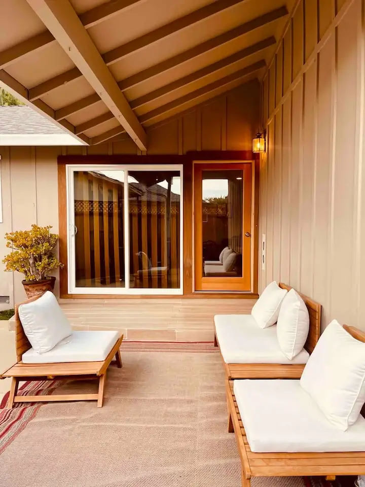

A place to settle.
A reason to notice.
Attention to rooms, objects, light and the small details that shape how a place feels.

Place / Comfort / AttentionSimple in feeling.
Simple in feeling.
Considered in the details.
Living Spaces is an evolving personal practice in how places are arranged, cared for and experienced. It is shared through things tried and lessons learned.
RASA gives this practice a tangible expression in two homes: Simple & Sleek and Simple & Serene.
Experience RASAA real place / An everyday experienceWork comfortably.
Work comfortably.
Pause properly.
The experience is carried by ordinary details: a useful work surface, a comfortable room, a daily ritual.


The practice
Work is contribution.
Life is attention.
A growing field of attentionRooms. Objects.
Rooms. Objects.
Garden. Table.
These are directions for the practice to grow through observation and experimentation. The RASA homes are available to experience now; future explorations will take shape through the work itself.
Visit the RASA site